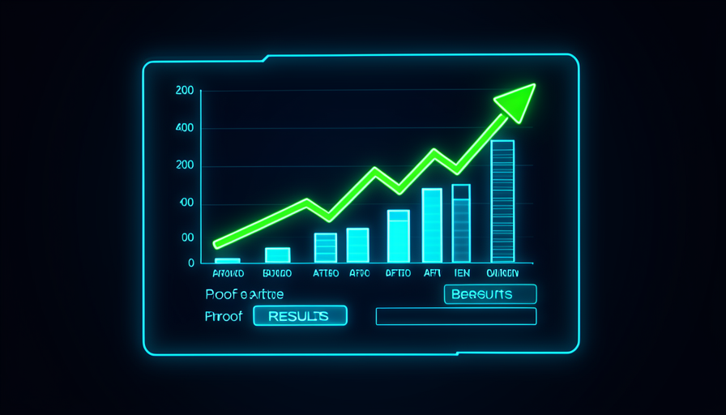

💡 New here? Three words before you start
- KPI — the number that matters: what you want to move (time spent, sales, errors). It’s your "scoreboard."
- Case study — a short account of real work: the problem, what you did, and the number that changed.
- Track record — your track record: the list of results that proves you deliver for real, not by luck.
🎯 Set the number first (the KPI)
There's a common trap: we build something, think it's cool, and move on. But cool isn't proof. The first question — asked before to get started — it's simple: which number do I want to move?
This number is your KPI (key metric). It could be minutes spent on a task, errors per week, hours in a queue, or closed sales. Choose it early, and it becomes the target. Without a target, you'll never know if you hit it — you'll only "think" things improved.
🔑 The central idea
A good KPI is just one number, easy to measure and truly important:
- •Bad: "be more productive" → vague, not measurable.
- •Good: "cut the weekly report time from 2h to 30min" → clear and measurable.
💡 Practical tip
Before asking AI for anything, complete the sentence: "I'll know it worked when <number> is <target value>". If you can’t fill this out, you’re not ready to build yet—you’re ready to think a little more.
Key concepts
🧪 Test for real (don’t trust "looks good")
AI is very good at delivering things that seem certain. Well-written text, a polished spreadsheet, code that runs. But “looks right” and “is right” are different things—and the only way to find out is test it for real, with real-world cases.
Testing for real means using the result in the real world: run the spreadsheet with your actual numbers, send the email to yourself first, put the hardest case through the agent. Deliberately include the weird case — that's where things break.
✓ Real-world test
- ✓Uses your real data and cases
- ✓Deliberately includes the difficult case
- ✓Check the result against reality
- ✓Run it more than once
✗ Trusting “seems”
- ✗Accepts it because “it looked good”
- ✗Only looks at the easy case
- ✗Doesn't verify the numbers
- ✗Run it once and trust it
💡 Practical tip
Calculate a “by hand” case yourself and compare it with what the AI delivered. If they match, great. If they don’t, you’ve just caught an error that would have bitten you later. Checking one case is worth ten “looks right to me”s.
Key concepts
📊 Measure before and after
You defined the number (topic 1) and tested it (topic 2). Now comes the most convincing proof there is: the difference between before and after. Write down what things were like before you made changes and how they turned out afterward. That difference is your result — in numbers, not opinions.
The golden rule: measure the “before” early, before building, because afterward you can't go back in time. A written-down “before” is worth its weight in gold; a “before” recalled from memory is just a guess.
📈 The market number that matters
- •Only ~6% of companies are really good at using AI...
- •...and about ~30% of AI projects end up abandoned.
Most people give up precisely because never measured whether it was worth it. Those who measure and prove it are in the minority who succeed—that gap is your advantage.
Key concepts
📁 Put together your first case study
Now you have everything you need to tell the story: the problem, what you did, and the number that changed. That’s a case study — and it keeps executing the steps on its own until it gets there. It doesn’t stop after one answer: it keeps working, step by step, until the task is complete.
The structure that always works is problem → action → number. "I had problem X. I did Y with the AI guiding me. Number Z changed from A to B." That's it: that's proof, not a promise.
📝 Case study template (copy and fill in)
Goal: write your first case in 5 minutes. Paste the template into a notes app (or ask AI to polish it) and replace each <part> with your details.
CASE STUDY — <título curto, ex: "Relatório semanal em 1/4 do tempo"> PROBLEMA No meu trabalho de <sua função>, a tarefa <qual tarefa> me tomava <número antes> por <período, ex: semana>. AÇÃO Dirigi a IA para <o que você mandou ela fazer>, usando <skill / agente / automação que você montou>. NÚMERO <o KPI> saiu de <valor antes> para <valor depois> — uma melhora de <diferença, ex: 75%>. COMO VERIFIQUEI Testei com <casos reais> e comparei <antes> com <depois>.
How to know it worked: when you finish, read it aloud. If a stranger understands the benefit without you explaining and there’s a concrete number, the case study is ready.
💡 Practical tip
Save one screenshot from before and after, together with the case study. An image with a number is the hardest proof to dispute — and the easiest to show.
Key concepts
📣 Show the Results (Portfolio / LinkedIn)
Proof tucked away in a drawer doesn’t open any doors. The step many people skip—and what separates those who grow from those who stay stuck—is show the result in a place where the right people will see it.
It could be a LinkedIn post, a simple portfolio, or even a direct message to your boss. The content is your case: problem, action, number. You’re not bragging—you’re showing evidence. Evidence is respectable.

✓ How to present it well
- ✓Lead with the number ("from 2h to 30min")
- ✓Describe the problem in one sentence
- ✓Show a before-and-after screenshot
- ✓Invite people with the same problem
✗ What sinks the post
- ✗Only adjectives ("that was amazing!")
- ✗Not a single number
- ✗Technical jargon nobody understands
- ✗Wait for it to "be perfect" before publishing
💡 Practical tip
Use the case study from topic 4 and ask the AI: "turn this case study into a short LinkedIn post, starting with the number and using plain language". You review it, adjust the voice, and publish. The hard work (measuring and proving) is already done.
Key concepts
🔁 Repeat to Build a History
A case study proves you can do it. Three, four, five cases prove it wasn’t luck — they prove that you has a method. This is the final step in Track 2: deliberately turning the wheel again to create history.
Each new case is faster than the last because you reuse the skills and templates you've built. Before long, you have a track record — and this is what opens the door to Trail 3, where you build your Jarvis.
✋ Before you continue — what turns a build into a result worth having?
🎓 Module summary
🏁 You finished Track 2!
You know how to direct AI to build, connect, delegate, and—now— prove. The next track takes this to another level: 🤖 Track 3 — Jarvis & Arsenal, where you build your personal assistant and get ready-made features.